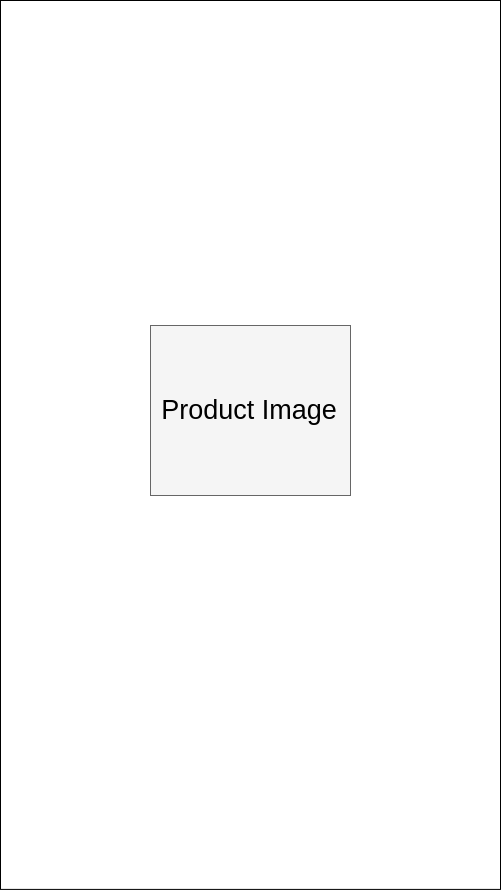
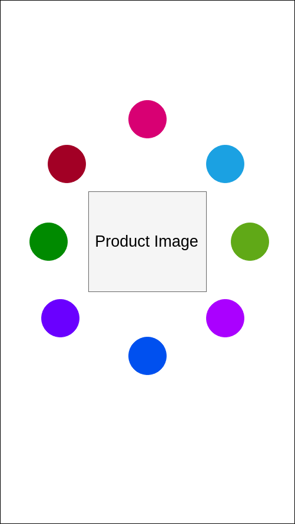
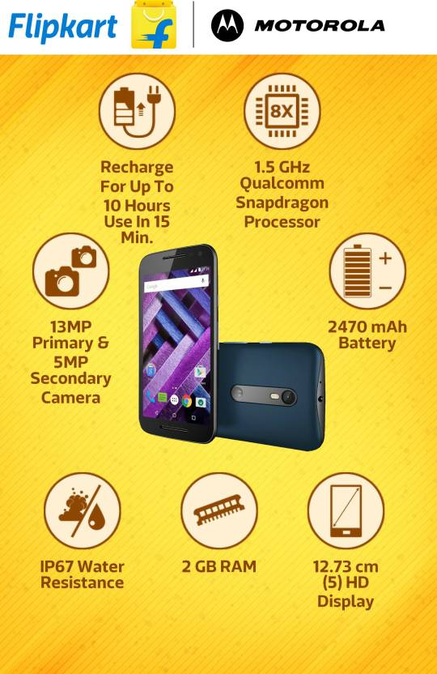
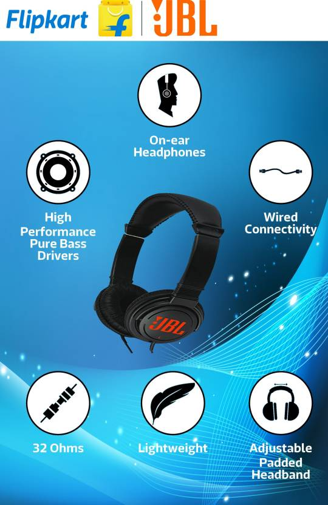

LEONARDO: Generating Product Unique Specification Images using Python¶
When I was at Flipkart in the Content Team, my manager brought up an interesting project for the Graphic Designers in our team. He said Flipkart was going to invest in the creation of product images that would replace content. It was going to be an image where a prospective buyer could see the key specifications of the project arrayed around the product image in a neat fashion.
He was talking about doing this manually for a few hundred thousand products.
When people talk about how they use Python at work, they’re usually talking about data munging, visualization or automation. A different subset uses it for Django or Flask.
I started with Python to help the team collate information related to content written by them, and prevent rewriting duplicates.
I was still a greenhorn when it came to Python in those days, but I’d learnt how useful image processing libraries could be. I used to watermark images using IrfanView, and I’d seen that Gimp had Python plugins. I wondered if I could use that to help my team out.
*Could Python be used to generate images?*
I offered to try and do something to automate the grunt work: selecting the product image, getting the specifications and selecting appropriate icons, choosing what images to place and placing them exactly in the center, ensuring that the product brand logo and the Flipkart brand logo would appear at the top left corner, and that the Flipkart logo would always be just a little larger than the product brand logo, for instance.
He said I should try doing this. Frankly, I wondered if I was in over my head. I keep doing this to myself.
The first step was generating a canvas. I needed something with a 9:14 resolution, according to the requirement.
I defined a custom class for this image, the USPImage class.
One of the methods, named prepareCanvas, would then take the aspect ratio provided to it, and the width, and, as if the name was not obvious, prepare the canvas.
The Image class comes from the PIL Python library. That’s a handy library that made this entire project possible. It provides an abstraction for images as matrixes of RGBA values at each row x column intersection. But it doesn’t offer any of the readymade tools provided in image processing software such as Photoshop or Gimp.
But it does provide you the highest degree of control you could want.
Using a canvas size of 1800, I could instantiate an image canvas just by using self.prepareCanvas((9,14),1800).
I had a canvas.
Now I had a problem I hadn’t encountered in many years. One of co-ordinate geometry. I was pleased that I could use the stuff I learnt not only in high-school, but also in my undergraduate program, studying mechanical engineering, to good use.
I had to place objects on the canvas, in an organized fashion.
The first image I had to place was the product image. And I had another problem.
I didn’t have access to the image repository at Flipkart. I didn’t quite have the time to ask my manager if I could tap into the CDN, so I just wrote a method to download the images off the website.
What I didn’t realize was that I’d have a tough time cleaning the images.
A simple “remove all white pixels” seemed like the obvious answer, but soon, I realized that was quite naive. Instead, I had to work on a different algorithm. And I had another problem, since the background color wasn’t quite uniform across product images.
To solve this, I had to sweep through the edges of the images, allowing my code to make an educated guess about the background colour. Once the code identified the colour, it swept through the image row by row, from left to right. It stopped whenever it encountered a drastic change in colours. “There,” I told myself,” is the product.”
Obviously, I had to redo this from right to left. I checked the results once the code completed, and I realized where I had been wrong. There were products where there were “hollow-points.” The space between headphones, for instance. Or the space between the legs of a TV. So I had the code redo this operation from top to bottom, and bottom to top. And then, I had a repository of images to take the product from.
Once I had the image, it was back to the canvas for me. I had to place the image at the very center, according to the brand’s guidelines.
Pillow’s Image class allows easy placement of another Image object at a given x,y location. However, it doesn’t really place them at the center.
Once I had this down, I had the next steps to solve. Placing icons around the product image. This was pretty straightforward.
However, there was something I did not consider. The specification icons were also going to have some text underneath. I had to make sure that the text would, in no circumstances, overlap with the other icons or any other text.
This was quite harder to sort. So instead of just placing the icon and then placing the text, I ensured that I created the Icon object with text underneath, and then calculated what positions to place the icons in.
That simplified the problem, and ensured that the icons would be spaced apart.
With this first version I had only to refine the solution. I received additional instructions and directives, such as placing the Flipkart logo and the brand logo on the image, choosing a background image randomly from a repository of background images, changing the color of the icon to a suitable palette predetermined by the graphic designers, based on the background colors.
In all honesty, it was the most fun I had had with programming until that day.
As I was doing this, my manager told me that the Catalog team was looking at outsourcing this work, to a graphics company that would charge us a bomb. Thanks to the additional pressure, I was able to finish the prototype tool, which I dubbed Leonardo (after both the artist and the Teenage Mutant Ninja Turtle).
On the day of reckoning, my manager told me that the inhouse artists could deliver 5 images per day. The external company was promising about 30 per day, at an exhorbitant price.
He asked me to show him what my tool could create.
He liked the quality of the work. It had some bugs to sort out, and I fixed the quality issues by increasing the DPI of the image. But he asked how much time one image takes to render.
I didn’t quite understand what he meant. I ran my program in front of him, using the icon pool that the graphics designers had created over the past few weeks and we timed it.
12,000 images in one hour.
What’s more, when he came back with some strange requirements for the logo, all I had to do was rerun the script with the new rules and we were set.
Doing this project made me realize what Python could be used for. I’m not sure I could understand it then. I was a poor programmer, and I didn’t know many things I probably should have. The application was used for a couple of months after I left, and then that project was scrapped.
However, it does answer a simple question.
Python **can* be used for graphic design.*
And it should be, because there are so many things you can automate in that world.
Source¶
The source for this project is available here. It still works, but granted that I wrote this program when I was a total Python newbie, there are many issues with the packaging and installation section. If you’re interested in giving Leonardo a shot, email me and I’ll help you out. I love this project because it taught me so much about image processing, and about automating things in general.
The Specifics¶
Leonardo uses Python, Pillow, Beautiful Soup and PyQt4.
Legal¶
The images used here are the property of Flipkart, and their respective brands. They are used here only in an educational/informative vein.